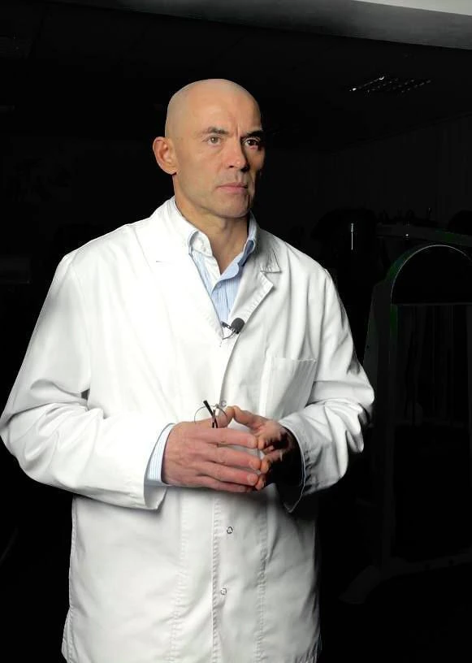

Профессиональный теннис · 2006–2008
Работа с теннисистами-юниорами и теннисистками первой сотни WTA.
Профессиональный путь
Врач-невролог. Медицинская и тренерская подготовка. Системные оздоровительные технологии.
О подходе СОТ
Профессиональный путь Рината Акбарова объединяет клиническую неврологию, адаптивную физическую культуру, работу со спортсменами сборных и лечебно-оздоровительную практику в России и за рубежом.
В центре его подхода — сочетание методов: движение и физические упражнения, ручные и аппаратные воздействия, питание и восстановительный режим. Этот подход он представляет как системные оздоровительные технологии — СОТ.
Медицинское образование по специальности «Лечебное дело» Ринат Акбаров получил в Москве. Клиническую ординатуру по неврологии проходил в Екатеринбурге под руководством профессора В. А. Широкова.
Дополнительно обучался в Уральской государственной академии физической культуры по направлению оздоровительных технологий и адаптивной физической культуры, а также в Челябинском институте физической культуры — по тренерско-преподавательскому направлению и организации физического воспитания и спорта.
Так в его профессиональной подготовке соединились врачебная работа, обучение движению и организация физических нагрузок.
Работал по направлению физической реабилитации со спортсменами сборных Свердловской и Челябинской областей, СССР и России. В профессиональной практике представлены греко-римская и вольная борьба, бокс, хоккей, фигурное катание, бальные танцы и теннис.
Опыт включает участие в работе по физической реабилитации спортсменов на чемпионатах Европы, мира и Олимпийских играх.
Работа с теннисистами-юниорами и теннисистками первой сотни WTA.
Работа с молодёжной сборной России и спортсменами национальной сборной. В 2016 году — работа с судейским составом IIHF на чемпионате мира в Москве.
Работа главным врачом на этапах чемпионата России по супермото и супербайку.
В 2004–2008 годах Ринат Акбаров заведовал кафедрой физической культуры с курсом лечебной физкультуры и врачебного контроля Государственной классической академии.
В профессиональной биографии — работа в США, Японии и странах Европы. Российская лечебно-оздоровительная практика включает фитнес-центр «Николина Гора» и клинику «Нео Вита».
СОТ — название подхода Рината Акбарова, в котором состояние человека рассматривается с учётом движения, физической нагрузки, питания, сна и психоэмоционального состояния.
Методы в этой системе не сводятся к одному виду процедур. В её описании сочетаются физические и дыхательные упражнения, кинезиотерапия, ручные методы, механотерапия, физиотерапевтические и рефлексотерапевтические воздействия, работа с питанием.
Отдельное место занимает продолжительное сопровождение: программа не заканчивается первым приёмом и предусматривает корректировки по ходу работы.
Методы и технологииОдин из этапов профессионального пути связан с проектом «Храм здоровья. Практики Рината Акбарова» в Подмосковье. В его концепции объединялись оздоровительная работа, движение, питание, отдых и образовательные программы.
В описаниях образовательного направления Ринат также выделял семинары, мастер-классы и обмен практическим опытом для врачей, массажистов и тренеров. Эта часть концепции была связана с сочетанием восстановительных методов и индивидуальной организацией работы.
Интервью, экспертные комментарии и упоминания в российской и зарубежной прессе — о движении, восстановлении и спортивной подготовке.
Комментарий о тренировочном режиме и питании.
Экспертный комментарий Woman.ru.
Комментарий о мышечной поддержке и упражнениях для плечевого пояса.
Комментарий «Вечерней Москве».
Экспертный комментарий редакции.
Ринат объясняет задания для координации рук и переключения движений.
Цитирование комментария Woman.ru в обзоре прессы.
Комментарий одного из врачей, приглашённых редакцией.
Телевизионное интервью МИР 24: видео и текст беседы.
Комментарий о расходе энергии при расчистке снега.
Экспертный комментарий о бытовой физической активности.
Разговор со спортивной редакцией «Вечерней Москвы».
Видеоинтервью и текст на сайте Пятого канала.
Экспертная оценка в материале KP.RU.
Medichub цитирует комментарий «Вечерней Москве».
Упоминание врача в интервью спортсмена. Архивная версия BTRussia.
Упоминание в интервью Шамиля Тарпищева. Газетный номер, страница 12.
Англоязычное интервью: спортсмен рассказывает о подготовке и работе с Ринатом Акбаровым.
Официальный список Федерации тенниса России. PDF, страница 2.
Официальный список: Акбаров Ринат Фагимович указан как специалист спортивной сборной команды. PDF, страница 2.
Официальный список: Акбаров Ринат Фагимович указан как специалист спортивной сборной команды. PDF, страница 1.